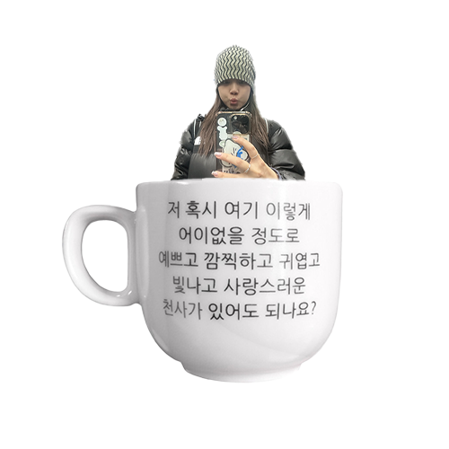
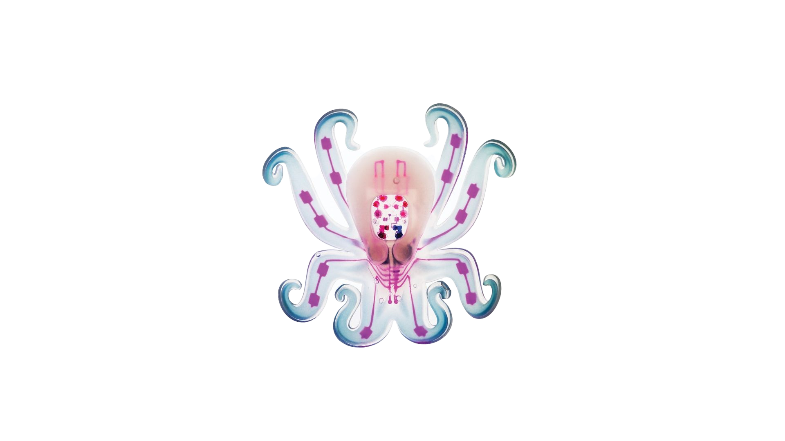

✻ YCWONY... ✻
2003년08월25일생 23살입니다
윤*열 나이로는 아직 창창한 21살!!!!!!!!!!!@ycwony

✳︎↑↑↑↑↑✳︎
자유롭게 입력하세요 악플은 금지 ~
최근에 발견한 흥미로운 것을 공유합니다
그냥 문어가 아니에요!!!!!!

Octobot........
옥토봇(Octobot)은 하버드대학 연구팀이 만든 자율형 로봇이다.
눈길을 끄는 건 딱딱한 부품을 이용하지 않은 채 부드러운 재료만으로 전신을 만들었다는 것.